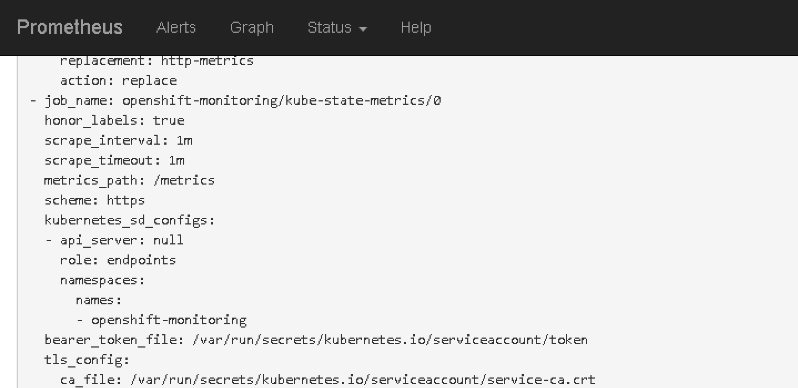
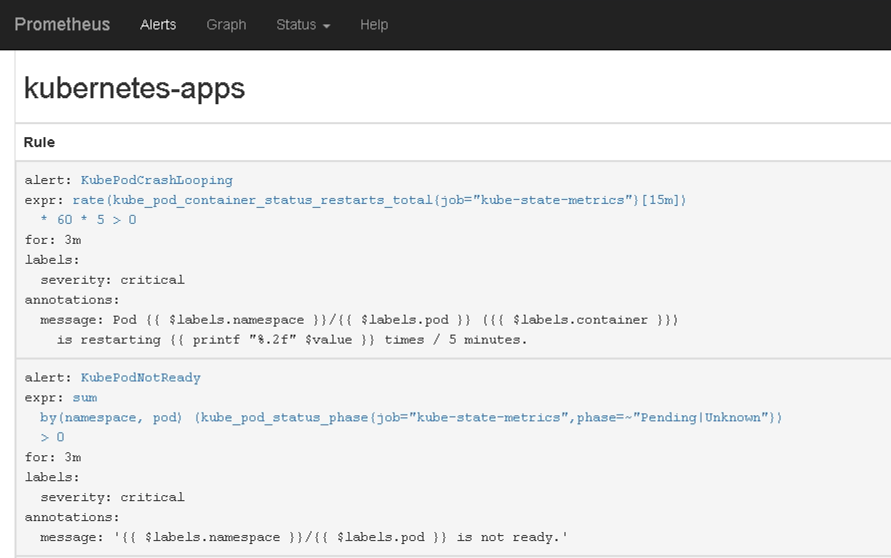
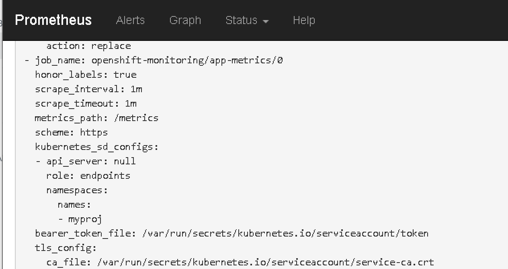

本文介绍如何对 Openshift (OCP/OKD) 3.11 的监控系统 cluster monitoring operator 进行简单定制, 扩展平台监控的范围.
Cluster Monitoring Operator 介绍
Openshift 3.11 以及后续的 4.x 平台都使用预定义配置的 cluster monitoring operator 来做平台监控. Cluster monitoring operator 管理 prometheus operator, grafana, kube-state-metrics 和 node-exporter. 而 prometheus operator 再负责管理 prometheus 和 alertmanager. 各组件之间的关系如下图所示:

通过检查 prometheus 的配置可以发现其 scrape 对象包括
- prometheus
- prometheus operator
- cluster monitoring operator
- alertmanager
- kubernete apiserver
- kubelet
- kube-controller
- kube-state-metrics
- node-exporter
- etcd (可选择启用)
对于一个中小型 Openshift 集群的平台层面 (不包含应用特定 metrics), 用这些对象的 metrics 来做平台监控其实也差不多够用了. 然而 Openshift 监控套件的预定义配置并没有覆盖非系统级的 namespace.
举个例子, 我的应用 pod 跑在 myproj project/namespace 下. 虽然 kube-state-metrics 会收集 myproj 名字空间下资源 (deployment/statefulset/pod) 的状态信息, 但是预定义的 alert rules 只选取 openshift-.*|kube-.*|default|logging 这些 namespace 的 metrics 来进行评估. 导致的结果是: 虽然收集了应用 namespace 下的资源状态信息, 却无法实现告警.
遗憾的是 Openshift 并不支持用户扩展其平台监控套装的监控范围. 文档原文如下
Explicitly unsupported cases include:
- Creating additional ServiceMonitor objects in the openshift-monitoring namespace, thereby extending the targets the cluster monitoring Prometheus instance scrapes. This can cause collisions and load differences that cannot be accounted for, therefore the Prometheus setup can be unstable.
- Creating additional ConfigMap objects, that cause the cluster monitoring Prometheus instance to include additional alerting and recording rules. Note that this behavior is known to cause a breaking behavior if applied, as Prometheus 2.0 will ship with a new rule file syntax.
如果想让监控覆盖到用户的 namespace, RedHat 给出的建议是另外单独部署 prometheus 套件. 对于大型集群, 这可能是一个合理的建议. 但是对于一个小型集群, 如果本身就只有几个用户级别的 namespace, 总共十几或几十个 pod, 你让我再单独来一套 prometheus? 实在是很蛋疼.
如果你使用的是订阅版本的 Openshift Container Platform, 为了避免维保/技术支持的麻烦, 请遵循 RedHat 的建议. 如果你使用的是社区版本的 OKD, 可以继续往下看: 如何改造 cluster monitoring operator 来满足定制化需求.
定制化方案
需求
下面这些应该是非常基本的定制化需求
- 扩展告警的监控范围, 除了系统级别的 namespace, 还要覆盖所有应用 namespace
- 调整 target 的 scrape interval. 例如调整 kube-state-metrics 的刮取间隔为 1m
- 定制 alert rules, 例如调整触发告警的状态持续时间. 像 KubePodCrashLooping, KubeNodeNotReady 默认设置状态持续 1h 才会触发告警, 黄花菜都凉了吧
- 添加额外的 service monitor 来包含自定义应用
再次吐槽 RedHat 的产品, 经常弄一些非生产可用, 跟玩具一样的东西出来, 这个不支持那个也不支持, 性能/稳定性/扩展性一堆问题. 类似的还有 Openshift 平台的 EFK 日志系统.
定制化配置
由于这些定制化需求在 prometheus + alertmanager 体系中对应的是一组配置文件, 一个很自然的想法是能不能重新构建镜像, 把这些定制化的配置文件覆盖到 cluster monitoring operator 镜像里来实现需求?
1 | # 获取 cluster monitoring operator 源代码 |
简单检查一下 cluster monitoring operator 的源码就可以发现其实并不可行, 原因是这些预定义配置文件会被 go-bindata 用来生成 go 代码, 最终会成为 operator binary 的一部分. 即这些配置文件 "固化" 在二进制文件中了. 我猜想这也是 RedHat 迟迟无法提供针对 cluster monitoring operator 进行定制化配置的原因.
查看Makefile可以大致了解: ${ASSERTS} 这个目标会执行 ./hack/build-jsonnet.sh来产生所有预定义配置, 而 pkg/manifests/bindata.go 这个目标会利用预定义配置生成 go 代码. 因此只需要修改 ./hack/build-jsonnet.sh 脚本替换预定义配置即可实现需求.
在hack目录下建立路径来存放需要定制的配置文件. 把预定义文件复制过来, 然后按照需要修改 1
2
3mkdir -p hack/customization/assets/{prometheus-k8s,kube-state-metrics}
cp assets/prometheus-k8s/rules.yaml hack/customization/assets/prometheus-k8s/rules.yaml
cp assets/kube-state-metrics/service-monitor.yaml hack/customization/assets/kube-state-metrics/service-monitor.yaml
定制 kube-state-metrics target 的刮取时间间隔需要修改service-monitor.yaml的 interval 字段.
定制告警触发的状态持续时间需要修改rules.yaml中 alert rule 的定义. 例如我调整了下面告警的状态持续时间
- kube-state-metrics job 相关 * KubePodCrashLooping * KubePodNotReady * KubeDeploymentGenerationMismatch * KubeDeploymentReplicasMismatch * KubeStatefulSetReplicasMismatch * KubeStatefulSetGenerationMismatch * KubeDaemonSetRolloutStuck * KubeDaemonSetNotScheduled * KubeDaemonSetMisScheduled * KubeCPUOvercommit * KubeMemOvercommit * KubeQuotaExceeded * KubeNodeNotReady
- kubelet job 相关 * KubeletDown
- node-export job 相关 * NodeExportDown
- 其他 * TargetDown
然后修改hack/build-jsonnet.sh文件, 用自定义配置替换默认配置
1 | ... |
添加额外的 service monitor 比较简单, 无需修改这里的代码. 后面部署监控套件后, 在 openshift-monitoring 项目下创建自定义 service monitor 资源即可, prometheus operator 会根据 service monitor 更新 prometheus 的配置文件.
构建定制化镜像
1 | # build operator binary |
测试
在 inventory 文件中通过openshift_cluster_monitoring_operator_image参数指定定制镜像 quay.svc.vopsdev.com/openshift3/ose-cluster-monitoring-operator:v3.11-rev1. 重新部署集群监控套装.
登录 prometheus 界面确认自定义配置已经生效
调整 kube-state-metrics 的 metrics 收集周期: 
扩展 alert 到所有 namespace 并调整持续时间: 
自定义 target 配置: 